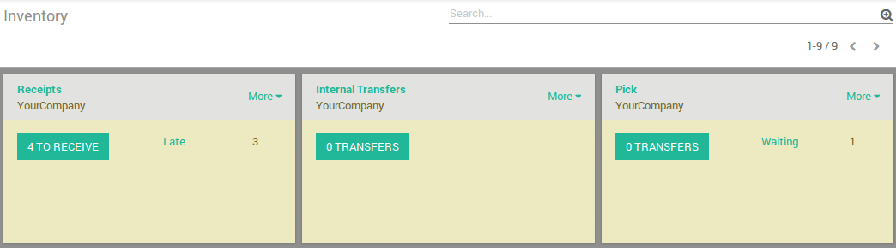

Overview
When an order goes to the shipping department for final delivery, Odoo is set up by default to utilize a one-step operation: once all goods are available, they are able to be shipped in a single delivery order. However, your company's business process may have one or more steps that happen before shipping. In the two steps process, the items in a delivery order are picked in the warehouse and brought to an output location for shipping. The goods are then shipped.
In order to accomplish a Pick + Ship delivery in Odoo, there are a few
necessary configuration steps. These steps create an additional
location, which by default is called Output. So, if your warehouse's
code is WH, this configuration will create a location called
WH/Output. Goods will move from WH/Stock to WH/Output in the first
step (picking). Then, they move from WH/Output to WH/Customers (in the
case of sales orders) in the second step (shipping).
Note
Check out How to choose the right inventory flow to handle delivery orders? to determine if this inventory flow is the correct method for your needs.
Configuration
Allow management of routes
Odoo configures movement of delivery orders via the routes. Routes provide a mechanism to chain different actions together. In this case, we will chain the picking step to the shipping step.
To allow management of routes, go to .
Ensure that the radio button Advanced routing of products using rules is checked.

Click on Apply at the top of the page to save changes (if you needed to check the radio button above).
Note
If you checked option Advanced routing of products using rules you may need to activate Manage several locations per warehouse if it wasn't activated beforehand.
Configure warehouse for Pick + Ship
To configure a Pick + Ship move, go to and edit the warehouse that will be used.
For outgoing shippings, set the option to Bring goods to output location before shipping (Pick + Ship)

Create a Sales Order
Install the Sale if it is not the case, and create a sales order with some products to deliver.
Notice that we now see 2 transfers associated with this sales order
in the Delivery stat button above the sales order.

If you click on the 2 Transfers stat button, you should now see two different pickings, one with a reference PICK to designate the picking process and another with a reference OUT to designate the shipping process.
Process a Delivery
How to Process the Picking Step?
Ensure that you have enough product in stock, and go to Inventory and click on the Waiting link under the Pick kanban card.
Click on the picking that you want to process.
Click on Reserve to reserve the products if they are available.
Click on Validate to complete the move from WH/Stock to WH/Output.
This has completed the picking step and the WH/PICK move should now show Done in the status column at the top of the page. The product has been moved from WH/Stock to WH/Output location, which makes the product available for the next step (Shipping).
How to Process the Shipping Step?
Go to Inventory and click on the # TO DO link under the Delivery Orders kanban card.

Click on the picking that you want to process.
Click on Validate to complete the move from WH/Output to the customer (Click Apply to assign the quantities based on the quantities listed in the To Do column)
This has completed the shipping step and the WH/OUT move should now show Done in the status column at the top of the page. The product has been shipped to the customer.